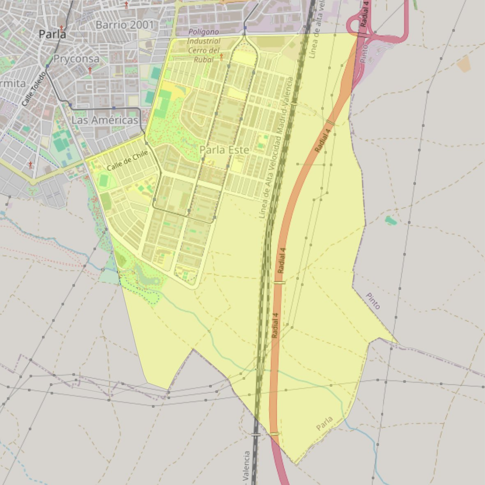

San Francisco de Sales

- Arciprestazgo
- Parla
- Población
- Parla
- Dirección postal
- c/ Jaime I el Conquistador, 141
- Código postal
- 28983
- Extensión
- 7,53 km² (753 ha)
- Teléfono
- 677 585 257
- Correo electrónico
- parroqua.fransales@gmail.com
Arciprestazgos y parroquias de la Diócesis de Getafe
